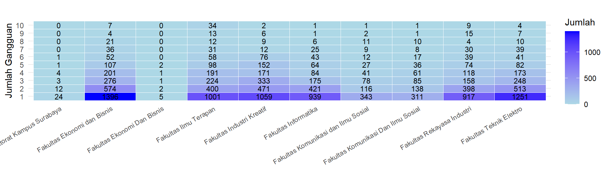
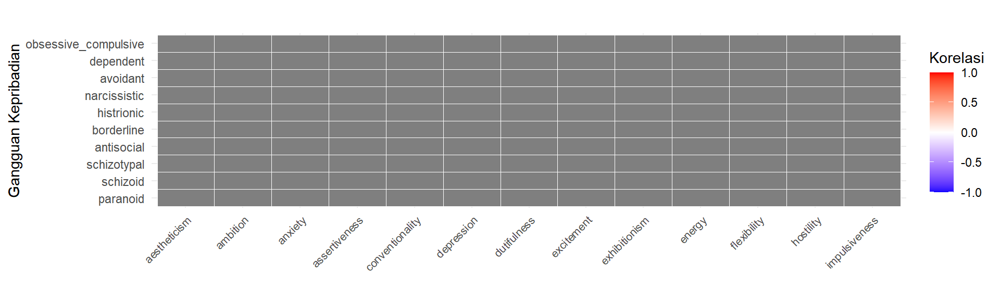

Proporsi Mahasiswa dengan Gangguan Kepribadian (Minimal 1)
26.7% (8470)
Proporsi Mahasiswa dengan >1 Gangguan Kepribadian
12% (3798)
Proporsi Mahasiswa dengan >4 Gangguan Kepribadian
1.8% (558)
Kategori Skor Sifat Normal dan Faktor
Kategori Skor Gangguan Kepribadian
OMNI Personality Inventory
Jumlah Mahasiswa per Fakultas
Jumlah Mahasiswa per Program Studi


Distribusi Jumlah Kepemilikan Gangguan Berdasarkan Program Studi
Konstruk Faktor - Agreeableness Rendah
Konstruk Faktor - Conscientiousness Tinggi
Konstruk Faktor - Extraversion Rendah
Konstruk Faktor - Narcissism Tinggi
Konstruk Faktor - Neuroticism Tinggi
Konstruk Faktor - Openness Rendah
Konstruk Faktor - Sensation Seeking Tinggi
Konstruk Normal - Anxiety Tinggi
Konstruk Normal - Conventionality Rendah
Konstruk Normal - Depression Tinggi
Konstruk Normal - Dutifulness Rendah
Konstruk Normal - Exhibitionism Tinggi
Konstruk Normal - Energy Rendah
Konstruk Normal - Flexibility Rendah
Konstruk Normal - Hostility Tinggi
Konstruk Normal - Impulsiveness Tinggi
Konstruk Normal - Irritability Tinggi
Konstruk Normal - Modesty Rendah
Konstruk Normal - Moodiness Tinggi
Konstruk Normal - Self Indulgence Tinggi
Konstruk Normal - Self Reliance Rendah
Konstruk Normal - Sincerity Rendah
Konstruk Normal - Tolerance Rendah
Konstruk Normal - Trustfulness Rendah
Konstruk Normal - Warmth Rendah
Fitur data tidak dapat ditampilkan karena untuk kerahasiaan data. Sebagai gambaran, fitur data menampilkan tabel data nama mahasiswa, fakultas, dan hasil pengukuran dari 28 konstruk kepribadian yang telah diukur secara individu. Tabel data ini juga interaktif, sehingga pengguna dapat melakukan filter data berdasarkan fakultas dan hasil pengukuran atau pencarian nama mahasiswa.